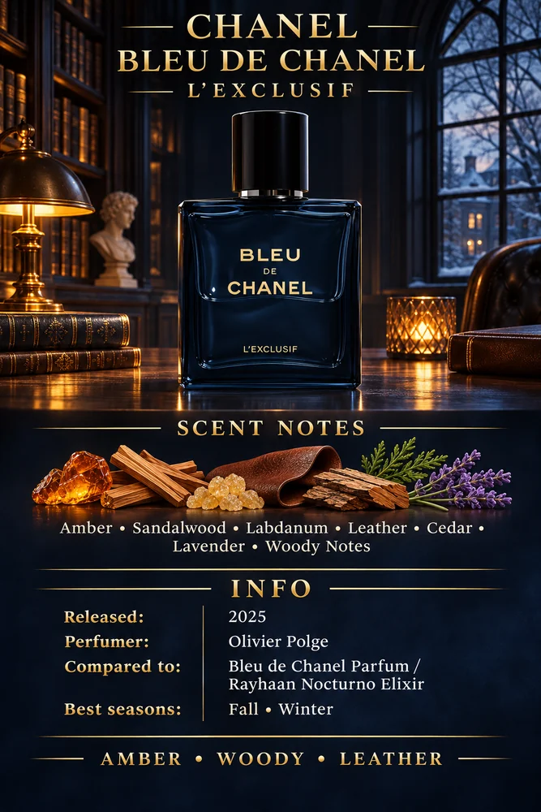
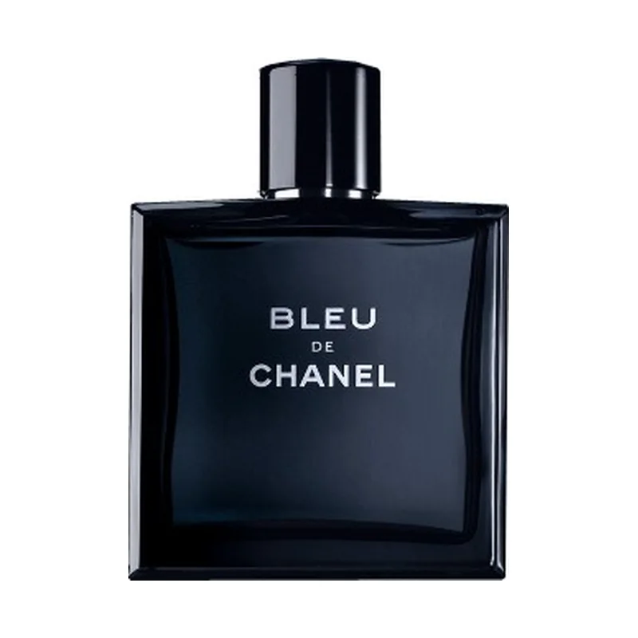
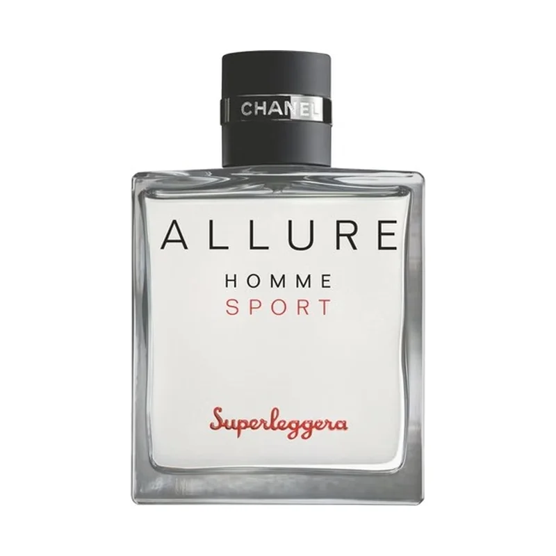

Chanel
Bleu de Chanel L'Exclusif
β Beta Designer · 2025 Future buy
Randy's rating—/10
Public rating8/10
Overall R—/25
Normalized N—
R and N are left blank until Randy has worn and rated it. How scores work
Notes
Top notes
- —
Heart notes
- —
Base notes
- amber
- sandalwood
- labdanum
- leather
- cedar
- lavender
- woody notes
Details
| House | Chanel |
|---|---|
| Type | Designer · β Beta |
| Concentration | — |
| Released | 2025 |
| Perfumer | Olivier Polge |
| Scent family | Woody, Amber & Resin, Leather & Tobacco |
| Best seasons | Fall, Winter |
| Similar to | Chanel Bleu de Chanel Parfum Rayhaan Nocturno Elixir |
Sources
Fragrantica 4.11/5 (about 8.2/10) from 3,184 votes; Parfumo 7.6/10 from 833 ratings. Average about 7.9, rounded to 8. Checked 2026-11-15.
Other Suggestions
-
 ChanelBleu de Chanel ParfumRandy9.5Public 9N 0.926
ChanelBleu de Chanel ParfumRandy9.5Public 9N 0.926 -
 ChanelBleu de Chanel Eau de ParfumRandy9.25Public 9N 0.913
ChanelBleu de Chanel Eau de ParfumRandy9.25Public 9N 0.913 -

ChanelBleu de Chanel Eau de ToiletteRandy8.5Public 8N 0.826 -

ChanelAllure Homme Sport Superleggera Eau de ParfumRandy8.5Public 8N 0.826 -
 CreedWild VetiverRandy9.5Public 8N 0.880
CreedWild VetiverRandy9.5Public 8N 0.880